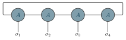

Examples / 07
Periodic MPS

A matrix product state with periodic boundaries: the bond that leaves the last tensor comes back into the first, so the chain is a ring and the amplitude is a trace, tr(A^{s1} A^{s2} A^{s3} A^{s4}), with no end to start the sweep from.
The closing bond is not between neighbours, so the lattice does not imply it; \tnjoin asks for it by the two ports it joins. It leaves each end sideways, as the bonds of the chain do, and runs back round the top of the stack, clear of the physical indices below.
The picture
Point at a line to see what it draws, or at the picture to see which line drew it.
\begin{tikzpicture} \tnstack{P}{4}{ket} \tnlayer{P}{ket}{4*coef/$A$} \tnconnect{P} \tnopen[label=$\sigma_{#1}$]{down}{P} \tnjoin{P-ket-1:left}{P-ket-4:right}\end{tikzpicture}
The whole file
\documentclass[border=4pt]{standalone}\usepackage{amsmath,amssymb}\usepackage{tikz-tensors}\input{notation}\begin{document}\begin{tikzpicture} \tnstack{P}{4}{ket} \tnlayer{P}{ket}{4*coef/$A$} \tnconnect{P} \tnopen[label=$\sigma_{#1}$]{down}{P} \tnjoin{P-ket-1:left}{P-ket-4:right}\end{tikzpicture}\end{document}